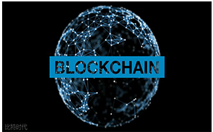

- 链块+技术
- 链块+影响
- 链块+应用
- 链块+赢家
-
链块+技术
区块链是分布式数据存储、点对点传输、共识机制、加密算法等计算机技术的新型应用模式。所谓共识机制是区块链系统中实现不同节点之间建立信任、获取权益的数学算法[1]。 2016年5月，货币区块链研究中心出版了国内第一本深入浅出介绍区块链的书籍《区块链：定义未来金融与经济新格局》。其中介绍了区块链技术对未来金融与经济带来的影响。区块链（Blockchain）是比特币的一个重要概念，火币联合清华大学五道口金融学院互联网金融实验室、新浪科技发布的《2014—2016全 球比特币发展研究报告》提到区块链是比特币的底层技术和基础架构[2] 。本质上是一个去中心化的数据库，同时作为比特币的底层技术。区块链是一串使用密码学方法相关联产生的数据块,每一个数据块中包含了一次比特币网络交易的信息，用于验证其信息的有效性（防伪）和生成下一个区块. -
链块+影响
中国企业到海外投资，往往由于对投资所在国家当地的税务、法律、文化和拟投资的企业实际情况等一系列问题感到陌生，担心上当受骗，导致不少企业既想“走出去”寻找机遇,但又怕“走出去”寸步难行。 对此，可以考虑将“一带一路”沿线国家中一些拟出售的农业、能源、资源等被投资者的资料数字化，通过“区块链”技术一方面把相关讯息广泛地、迅速地向包括中国企业在内的全球投资者传播，供潜在的投资者参考。另一方面，则是通过“区块链”技术高安全性、互相监察验证和公开透明等的优势作信用背书，可以增强投资者和被投资者的互信基础，方便投资者作出投资选择及签订具有信用背书的合同，而无须担心遭遇欺诈问题。反过来，中国富余的产能也可以通过数字化，利用“区块链”技术向“一带一路”沿线国家潜在投资者推销。这不但可以减少交易和营销成本，也可向沿线国家乃至全球各国进行网络众筹，更重要的是，有助解决中国产能过剩问题。 -
链块+应用
当前以美元为主导的国际金融体系，在机 制上存在“特里芬悖论”——美国通过美元的 主导地位向国际转嫁其金融危机，不但严重冲 击环球金融市场，部分地区、国家更因此爆发 金融危机乃至经济危机。加上，“一带一路” 沿线国家 之间的国 际货币结 算广泛采 用美元， 不但成本 较高，还 容易遭受 汇率波动 风险、信 用风险和 贬值风险 等风险。
要减缓或避免这些影响，中国政府应考虑联合即将成立的亚洲金融合作协会内的政府和金融机构，通过“区块链”的技术开发一个虚拟货币系统。这种由各方共同拟定规则，信用建立在联合协议上的系统，为其运作的有效性、安全性提供了可靠的法律依据。该系统不但是双边货币互换、多变交叉货币互换的网络版，更是升级版、智能版。
-
链块+赢家
“区块链”技术拥有去中心化、方便快捷、高安全性、记账速度快、成本较低、互相监察验证和资料公开透明等优点。因此，除了美国纳斯达克证券交易所试用“区块链”技术来处理私人证券市场的股票交易外，花旗集团、日本三菱日联金融集团、瑞士联合银行和德意志银行等廿二家全球大型金融机构，也将应用“区块链”技术，打造快捷便利、成本低廉的交易作业的新一代系统，希望藉此构建新国际金融交易体系的主导权。在金融领域之 外,“区块链”技术也开始应用在保护知识产权、律师公证、储存个人资料和网络游戏等领域。 虚拟货币系统在亚洲金融合作协会内若试验成功，可逐步推广至“一带一路”沿线各国。由于金融领域的互联互通,是促进经贸、投资、旅游等众多领域合作的基础和支撑，这不但可加强中国与沿线各国金融领域的互联互通，更能加强中国与沿线各国在其它领域的互联互通。 